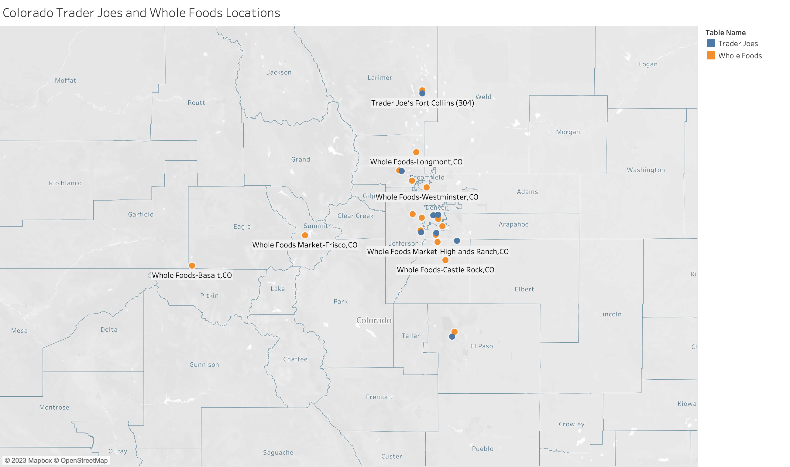

Week 9 Lab: Visualizing and Exploring Cross-Sectional Data in Tableau

This Lab Contributes to Course Objectives: 1, 3, 4, 5, 7, 8
Learning Objectives Tableau
Understand Tableau geocoding capabilities
Explain the different use cases of symbol and filled maps
Create symbol and filled maps
Customize Tableau maps
Create visualizations to summarize individual-level data
Aggregate individual level-data by geographic region
Tableau
The defining characteristic of cross-sectional data is that we observe values of variables at a single point in, or cross-section of time. Often, but not always, cross-sectional data have geographic compenents that allows us to use Tableau’s mapping features when creating visualizations. Effective analysis of cross-sectional data begins with estimating and conveying useful summary statistics. Today, we will spend most of our time discussing how to do this with spatial data.
1. Tableau’s Geocoding
If you want to analyze your data geographically, you can plot your data on a map in Tableau.
When building map views, Tableau supports any latitude and longitude coordinates, as long as they are in decimal degrees. Tableau can also recognize and geocode the following geographic information types:
Airport Codes
Cities
Countries
Regions
Territories
States
Provinces
Postcodes
Core Based Statistical Areas (CBSAs)
Metropolitan Statistical Areas (MSAs)
U.S. Area Codes
Congressional Districts
Zip Codes
If you have geographic delineations besides these, you will have to use crosswalks or some other means to convert the delineations to one of these forms, or to generate latitudes and longitudes for specific points (e.g., addresses).
2. Tableau’s Spatial Data Capabilities
Tableau can also connect to the following spatial file types:
Shapefiles
KML files
GeoJSON files
TopoJSON files
Esri File Geodatabases
These types of files include detailed geographic information that enables us to plot shapes and single points. For example, we can load smoke plume data into Tableau:
3. Symbol vs. Filled Maps
A symbol map is effective for showing quantitative data for individual locations. For example, you can use a symbol map to show individual store locations on a map.

You might want to highlight which stores have higher spending
DATEPART (date_part, date, [start_of_week]) returns part of a given date as a number.
For example, DATEPART (‘month’, #January 23, 2021#) = 1
Note that when you are using a literal date in date functions, surround it in pound signs, for example: #January 23, 2021#.
DATENAME (date_part, date, [start_of_week]) is similar to DATEPART, but it returns part of a given date as a string.
- For example, DATENAME (‘month’, #January 23, 2021#) = January
DATEADD (date_part, increment, date) returns a date in which the specified increment has been added to the given date.
- For example, DATEADD (‘day’, 7, #January 23, 2021) = January 30, 2021
DATEDIFF (date_part, start_date, end_date, [start_of_week]) returns the difference between the two dates using the specified date part.
- For example, DATEDIFF (‘day’, #January 23, 2021#, #February 24, 2021#) = 32 and DATEDIFF (‘month’, #January 23, 2021#, #February 24, 2021#) = 1
DATETRUNC (date_part, date, [start_of_week]) truncates or “rounds down” the given date to the level of the specified date_part. This function returns a new date.
- For example, when you truncate a date that is in the middle of the month at the month level, this function returns the first day of the month. So DATETRUNC (‘month’, #January 23, 2021#) returns January 1, 2021.
MIN (expression) returns the earliest date across all records, and MIN (expression 1, expression 2) returns the earlier of the two dates for each record.
- For example, MIN ([Order Date]) returns the earliest date in the Order Date field.
MAX (expression) returns the latest date across all records, and MAX (expression 1, expression 2) returns the earlier of the two dates for each record.
- For example, MAX ([Order Date]) returns the latest date in the Order Date field.
Here are some handy definitions for date_time arguments:
2. Use date functions in calculated fields
Connect to the carrots_prices.csv data and use the expressions above to do the following:
Create a calculated field named
months_agothat determines the number of months between the commodity price data and today.Create a calculated field named
first_datethat determines the earliest date in the data.Create a calculated field named
last_datethat determines the last date that the carrot price index was less than 135.Create a new variable called
monththat only includes the month.Create a new variable called
yearthat only includes the year.Create a new date variable called
my_datethat assigns a new date using yourmonthandyearvariables and sets the day as 15.
3. Visualize time series data
What types of visualizations are most appropriate for time series data?
Line graphs
Bar charts
Dot plots
Others?
Let’s experiment with creating these visualizations for time series:
Create a line graph that shows the value of carrots over time (by month)
Add markers to your line graph
Change your line graph to a bar graph dot chart
Change your bar graph to a dot plot
Change the size size, colors, and opacity of the dots in your dot plot (use the
SizeandColoricons)Change the markers in your chart from dots to a different shape (use the dropdown menu on the
Markscard, then use theShapeicons)
Now let’s experiment with changing what data is shown in your chart:
Change your x-axis to annual
Create one line that shows the average value of the commodity each year, one line that shows the maximum value, and one that shows the minimum value. Can you get all three of these lines in a single pane?
Restrict your date ranges so that your visualization only shows the last 20 years of data (use the
Filterscard)
4. Creating and interpreting trend lines
Now we are going to add a trend line to our visualization. I am sure you are all familiar with trend lines, but do you know how they are created? Let’s start with a linear trend line…
What does a linear trend line tell you about your time series data?
How is this trend line estimated? (conceptually… we will go through some equations on Wednesday!)
Now, let’s talk some specifics about linear trend lines in Tableau…
Open a new worksheet and create a line chart showing the monthly values of the commodity from 1990 through 2022
Add a trend line to your chart
When you click on the trend line, what information does Tableau give you about it? What does this information mean?
When you click on
describe trend modelwhat information does Tableau give you about it?Change your x-axis to annual. Did your trend line change? How do you know? Why did or didn’t the trend line change when you changed the date aggregation?
5. Visualizing structural breaks
Usually in long time series data we can see distinct points at which the trends in our data change. We typically refer to these as structural breaks. There are a variety of ways to test for structural breaks in your data that we will demonstrate in R, but for now let’s go over a couple ways to visualize structural breaks that we identify with the very sophisticated “eyeball method”.
Looking at your visualization of monthly carrot prices and linear trend line, does your trend line accurately reflect trends in the data for the entire period from 1990 to 2022?
Identify a month-year where it appears that trends in your data changed, in other words - where there appears to be a break in the structure (or trend) of the data.
Add a reference line at this month-year. (Right click on the x-axis and select
Reference Line) Does anything happen to your trend line?
Reference lines are useful annotations on figures showing raw data, but they do not inform Tableau that you want to estimate different trends before and after the line. Let’s go through two methods for doing this:
Method 1: Separate your time series by adding color
Create a new calculated field named
before_after_break. Use theIFandTHENfunctions and an appropriateDatefunction to populate this variable with “after” if the date if after the break you identified in the data and “before” if the date is before the break.Drag this variable to the
Colorcard.Add trend lines to your visualization. What happens?
Method 2: Separate your time series by segmenting the x-axis
Drag your new variable from the
Markscard to thecolumnsshelf.Sort your variable so that the “after” time period is shown following the “before” time period.
In the x-axis Edit Axis menu, select
independed axis ranges for each row or column(access this menu by right clicking on the x-axis)Note: Typically Tableau automatically adjusts these panes to be the same size, but you can set them to be different sizes based on the windows you have set by toggling back and forth in your date variable aggregation.
6. Creating panes to visualize mutiple time series
Sometimes we might want to view multiple time series in separate figures. We can do this with panes in our visualizations.
Let’s start by bringing in some price data for a few new commodities.
On the
Data Sourcepage connect to the following data sourcescorn_prices.csvandtomatoes_prices.csvWe are going to create a
relationshipbetween these data sources and our current working fileWith the carrot data in the
canvas, drag one of the other data sources next to it in the canvas. Do the same with the other data source.Now go to a new worksheet, what do you see? What did we just accomplish?
Now that we have all these data sources in a single file and they are structured in a “wide” format, we are going to construct time series plots that let us compare trends in these commodity prices across time.
Open a new worksheet and create a line plot of the prices over time for each commodity
Now try formatting your figure. Change colors, adjust sizes, etc.
Now use your
before_after_breakvariable to examine whether all the commodities appear to have a structural break at the time you identified for the first commodity.